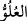
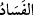
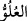
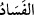
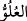

olduğunu müşâhede etseydi, mahviyet sâhibi olur, tevâzu gösterirdi.
Keşfü’l-esrâr’da der ki: Yarın kıyamet günü âhiret sarayında, sadakat koltuğunda
oturan ve azamet sâhibi Allah’a yakın olanlar, dünyada üstünlük ve yücelik dilemeyen,
kendisini herkesten daha küçük ve değersiz kabul eden, hiçbir zaman beğenmişlikle
kendisine bakmayan topluluktur. Arafat vakfesinden dönen tarikat mensubu gence,
“Arafattakileri nasıl gördün?” diye sorulduğunda şu cevabı verir: “Bir topluluk gördüm
ki ben onların içerisinde olsaydım, Allah’ın onları bağışlaması için duâ ederdim.”
Şeyh Sa’dî der ki:
Kendini küçük sayan, dünyada da büyüktür, âhirette de
Kendine değer vermediğin zaman halkın gözünde aziz olursun
Din büyüklerinden biri İblis’i gördü ve bize öğüt ver, dedi. İblis şöyle dedi: “Ben,
deme ki benim gibi olmayasın.”
Şeyh Hafîf şunları söyledi: Benliği terk etmek, dinde zındıklıktır. Benliği ispat etmek,
hakîkatte şirktir. Şerîat makamında olduğun zaman “Ben” demeye devam et. Hakîkat
yolunda olursan, “O” de. Her şey O’ndandır. Şerîat, fiillerdir, hakîkat ise hâllerdir. Fiil
ve davranışların kıvamı seninle/sende, hallerin nizamı ise onunla/ondadır.
Bazıları demiştir ki: “
(böbürlenme)”, nefse bakmak; “
(bozgunculuk)”
dünyaya bakmaktır. Dünya ise İblîs’in şarabıdır. Kim ondan bir defa içerse, artık
kıyamet gününe kadar ayılmaz.
Denilmiştir ki: “
(böbürlenme)”, kalbe gelen (kibirlilik gibi) fikir ve düşünceler; “
(bozgunculuk)” ise âzâlarda olur. Dolayısıyla kalbinde makam, mevki sevgisi ile
nefsin arzu ve istekleri olup amellerinde de riyâ ve sûm’a (desinler-duysunlar diye
yapmak) bulunan bir kimse kurbiyet makamına eremez. Aynı şekilde kalbinde bozuk bir
inanca sâhip olan, âzâlarında Allah’tan başkasına ibâdet edip insanları buna dâvet eden,
başkasının mallarını gasbeden, ırz ve namuslarını zedeleyip günahları helâl sayan bir
kimse de cennete ulaşamaz. Artık o, şeytanların dostudur. Şeytanlar da kendi dost ve
yakınlarıyla ateştedirler.
Bil ki, beşeriyet arzında “
(böbürlenme)”; firavunların, güç ve kuvvet sâhiplerinin,
kisrâların böbürlenmesidir. Ruhâniyet arzında “
(böbürlenme)” ise iblislerin, Hârut
ve Mârût gibi bâzı melekî ruhların böbürlenmesidir ki, bunların her ikisi de
kötülenmiştir. Keza Allah’ın dışındakilere nazaran “
(bozgunculuk)” da aynı
şekildedir.
Bu sebeple Allah, gayb ve melekût âleminin hükümranlığını, yalnızca böbürlenme
arzusundan uzak, muhabbet nazarıyla mâsivâllâha bakma talebinden kurtulan, tasarrufun
tamamını gerçek mâlike (Allah’a) teslim edip aradan çıkan kimselere verir. Ne dilersen
onu yap, çünkü mülk senindir. Allah bizi ve sizleri takvânın hakîkatına tutunanlardan
kılsın; itiraz, inkıbaz ve iddiâ sâhibi olmaktan muhâfaza buyursun.